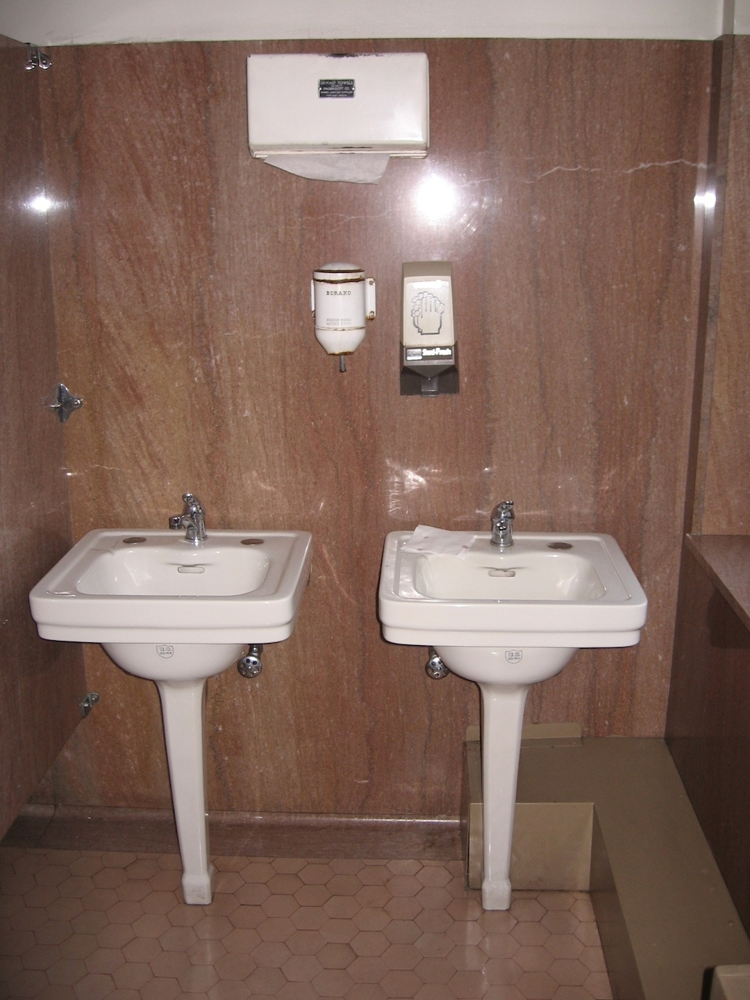

Our firm values accessibility and strives to be responsive to your requests. If you desire information that is not available here, please contact us and we will do our best to get you what you need. And we encourage you to offer suggestions for making our firm and our website more accessible and informative for you.
Our offices are located in the Gus Solomon Courthouse at the southwest corner of SW Main Street and SW Sixth Avenue, at 620 SW Main Street in downtown Portland. The courthouse opened in 1933 and is on the National Register of Historic Places.
More information about this historical building is available here.
The building is near numerous bus stops. The yellow and green TriMet lightrail runs on 6th avenue next to the building and stops at SW Madison street, right across the street. Checkout Trimet's map of our neighborhood.
Street parking downtown can be hit-or-miss. A parking garage is available across the street, on the northeast corner of SW Main and SW 6th at 1031 SW 6th Ave, Portland, OR 97204, and a SmartPark at 818 SW 4th Ave, Portland, OR 97204. Unfortunately, we cannot validate parking.
There are two building entrances. The first entrance on SW Main has a flight of stairs. Turn right as you enter and head to the gold elevator labeled "West."
The second entrance, on the west side of the building facing SW Broadway, is wheelchair accessible. Head through the doors to the left corner and take the gold elevator labeled "West."
The elevator says "West" and is on the opposite side of the entrance to the vending machine.
Our offices are on the second floor. Turn right as you exit the elevator. We are on the left side of the hallway near the middle. Search for door plates labeled 230 or 232. (Currently they are not labeled in Braille.)
A men's and a women's restroom are available on the main floor, near the building entrances. Each has one wheelchair accessible stall. The men's restroom has grab bars on the right and the women's has grab bars on the left. Here is a representative picture of the sinks.

If the existing bathroom configurations don't meet your needs, you may find suitable facilities nearby. Several Starbucks coffee shops in our neighborhood have accessible bathrooms.
If you have any questions about accessibility or would like us to arrange to meet you near the building, please let us know at least 24 hours before your appointment and we will be happy to accommodate you.

{kind=link}